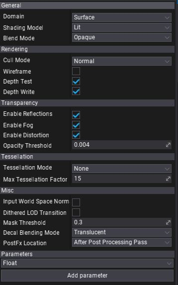

Material Properties
This page breaks down all the available material properties. These options are accesible per material via Material Editor window.

General
| Property | Description | ||||||||||||||||
|---|---|---|---|---|---|---|---|---|---|---|---|---|---|---|---|---|---|
| Domain | Specifies how material is going to be used. Certain materials used for postFx or 2D rendering requrie additional instructions for the rendering pipeline to be generated. Because of this, it's important to specify material domain that covers those cases. Possible options:
|
||||||||||||||||
| Shading Model | Specifies how material inputs and properties are combined to result the final surface color. Possible options:
|
||||||||||||||||
| Blend Mode | Specifies how blend material with the environment. Possible options:
|
Rendering
| Property | Description |
|---|---|
| Cull Mode | Defines the primitives culling mode used during geometry rendering. |
| Wireframe | If checked, geometry using this material will be rendered in wireframe mode without a solid triangles fill. |
| Depth Test | If checked, enables performing depth test during material rendering. |
| Depth Write | If checked, enables writing to the depth buffer during material rendering. |
Transparency

| Property | Description |
|---|---|
| Enable Reflections | If checked, enables reflections when rendering material. |
| Enable Fog | If checked, enables fog effect when rendering material. |
| Enable Distortion | If checked, enables distortion effect when rendering material. |
| Pixel Normal Offset Refraction | Enables refraction offset based on the difference between the per-pixel normal and the per-vertex normal. Useful for large water-like surfaces. |
| Opacity Threshold | Controls opacity values clipping point. |
Tessellation
| Property | Description | ||||||||||
|---|---|---|---|---|---|---|---|---|---|---|---|
| Tessellation Mode | Mesh surface tessellation method. Applies only to materials with Domain set to Surface. Possible options:
|
||||||||||
| Max Tessellation Factor | Maximum triangle tessellation factor. Default value is 15. Increase it to unlock even higher tessellation. Higher values reduce rendering performance. |
Miscellaneous
| Property | Description | ||||||||||||||
|---|---|---|---|---|---|---|---|---|---|---|---|---|---|---|---|
| Disable Depth Write | If checked, disables depth buffer write when rendering material. | ||||||||||||||
| Use Input World Space Normal | If checked, material input normal will be assumed as world-space rather than tangent-space. | ||||||||||||||
| Use Dithered LOD Transition | If checked, material uses dithered model LOD transition for smoother LODs switching. | ||||||||||||||
| Mask Threshold | Controls mask values clipping point. | ||||||||||||||
| Decal Blending Mode | Specifies decal material blending mode. Applies only to materials with Domain set to Decal. Possible options:
|
||||||||||||||
| PostFx Location | Specifies when render post effect material. Applies only to materials with Domain set to Post Process.Possible options:
|
Parameters
Every material contains a collection of custom parameters. Those parameters can be accessed from the game logic code or be overriden using Material Instances.
This section allows to add, edit and remove custom material parameters. Each parameter has a specified type and default value. Material parameters are identified by the name which means it has to be unique in order to prevent misleading.
To add new parameter choose a type from a dropdown menu and press Add parameter button. Then you can right click on prameetr name to rename or delete it.
To access material parameter value directly in a graph use Get Parameter. It allows to choose parameter with a dropdown menu and use it's value as shown in a picture below.

Attributes
Every parameter can have a collection of customizable attributes that can customize it's display logic in UI or be used as metadata for other systems (eg. serialization).
To add attribute to parameter simply right-click -> Edit attributes, then use + button to add new attribute, set Type to one of the items from the dropdown list, adjust properties of the atrtribute and hit OK to confirm.
For instance, Tooltip Attribute can be used to display documentation note about parameter for other users. Range and Slider attributes can help to customize editing scalar values and Ediotr Group and Editor Order can organize the list of parameters. To learn about attribute types see this page.